1. Makeover Requirements
1.1. The Task
- Critic the visualized graph with at least three points from each evaluation criterion (clarity and aesthetics) respectively.
- Suggest alternative graphical presentation to improve the current design:
- Proposed alternative data visualization must be in static form.
- Proposed design would need to be sketched.
- Support your design by describing the advantages or which part of the issue(s) your alternative design attempts to overcome.
- Use Tableau to design the proposed data visualization.
- Provide step-by-step description on how the data visualization was prepared.
- Describe three major observations revealed by the prepared data visualization.
1.2. Deliverables
- The write-up of the DataViz Makeover must be in distill or blogdown format, and is required to publish the write-up on Netlify.
- The DataViz Makeover must be prepared using Tableau Desktop. The final workbook must be uploaded onto Tableau Public.
2. Original Visualisation and Its Perceived Objective
The original visualization (shown below) showcases the merchandise trade, for both export and import, of the top six trading countries with Singapore across 2019 to 2020.

To better understand how best to recast this visualization, we must first understand the intent of the visualization. Alberto Cairo succinctly sums up the actual intent of the graphic: “what is it that you want people to see”. He went to explain that one should begin not by designing the graphic first but rather, begin by “writing a very long narrative that you want to tell”.
An attempt on the narrative for the above visualization is as follows:
“The import and export fluctuations within each of its top six trading countries differ greatly between 2019 to 2020, as well as against other top trading countries.”
To further illuminate the narrative, we propose the following questions that the visualization aims to answer:
• What are the import and export levels in each of the top six trading countries?
• How do these import and export levels fluctuate over time?
• Within the top six countries, who has the highest and lowest import and export levels respectively?
• (Additional) Do these fluctuations coincide with any event?
3. Critiquing Methodology
We attempt to critique the above visualization on two criterions: clarity and aesthetics. Ben Jones (2012) nicely captures these criterions within a two-by-two matrix. The ideal quadrant to be in is Quadrant I, where it is both clear and beautiful.

From a definition perspective, aesthetics refers to how pleasing the visualization is to the reader’s eye, while clarity refers to how clear and concise the story or the message behind the visualization is conveyed to the reader.
4. Critique of Visualisation
A critique of the above visualisation will be based on the earlier two criterions.
4.1. Clarity:
• Inconsistent vertical scale values intra and inter-countries
The vertical scales for both the primary and secondary axis denoting the export and import levels are inconsistent with one another for all six countries. For instance in Hong Kong, the export levels are denoted in millions, whereas the import levels are denoted in hundred thousands.
• Unmatched vertical scale values intra and inter-countries
Even when the scales are denoted in millions, as shown in Japan, the export and import levels don’t match up with each other. In the same Japan instance, export seems to have a higher scale level than its import.
• Inconsistent horizontal time scale values intra and inter-countries
The horizontal time scale values are inconsistent for Japan, as compared to the rest of the countries. Japan’s horizontal time scale only showcases the months of 2020, whereas the other five countries showcases the months of both 2019 and 2020.
• Unclear order of top six countries
There is no clear explanation on how the countries are arranged, and whether its order or arrangement takes into account the level of merchandise trade with Singapore. Can it be considered that HK is a more significant contributor of merchandise trade to Singapore, than US, solely based on its position within the visualisation?
4.2. Aesthetics:
• Legend shows two colour schemes, but visualisation has three
The legend clearly asssigns two distinct colours to export and import respectively, but the graph showcases a third colour. This third colour is a result of the overlapping area between both the export and import portions. Having a third undefined colour forces the reader to decipher for him/herself on what it actually means.
• Repeating scale names
The vertical scales of Export and Import, as well the horizontal scales of ‘Month of Period’ is repeated six times throughout the whole visualisation.
• Differing width
Excluding Japan which has only a 2020 time period, the rest of the countries with a 2019-2020 time period have differing graph widths. Hong Kong has a narrower graph width than Malaysia, which is located just below it.
• Legend takes up too much valuable real estate
Since the legend position is situated on the top right corner of the visualisation, the space below it on the right side of the visualisation is very much wasted. Relocating this legend either above or below, could have made the visualisation wider.
5. Alternative Design
5.1. Suggested Improvements
The use of an area chart in the original visualisation is ideal, given the fluctuations between the export and import levels across the time period. As such, the following suggestions are mere tweaks to the original visualisation:
• Consistent and matching vertical and horizontal scales
• Countries ordered in terms of overall merchandise trade
• Keep to two colour schemes
• Reduce repeated scale names
• Consistent chart widths
• Reposition or replace legend
• Presence of a header/sub-header indicating the storyline of the visualisation (with leading commentaries on visualisation itself)
5.2. Inspiration
Reusing the same area charts, we now scour everywhere for great inspiration!
Taking a leaf from history, the visualisation on Commercial and Political Atlas by William Playfair intuitively showcases the difference in levels within the area chart. The use of different colour schemes allow the reader to understand which areas have higher amounts than another. Though it only uses one area chart, it helps that this inspired visualisation is also based on exports and imports, similar to this makeover!

5.3. Sketch
The following sketch strives to find common ground between the original visualisation and its critiques, as well as the historical inspiration above.

6. Step-by-Step Guide
6.1. Data Preparation
The original raw data reside within the following links: Merchandise Trade Webpage and Merchandise Trade Excel Download
The Excel file contains the following three sheets:
| Sheet_Name | Description |
|---|---|
| Content | Explaining sheets T1 and T2 contain the “Merchandise Imports By Region/Market, Monthly” and “Merchandise Exports By Region/Market, Monthly” respectively |
| T1 | Contains the monthly merchandise imports by country/region in dollars (thousands for individual countries or millions for regions) spanning Jan-1976 to Apr-2021 |
| T2 | Contains the monthly merchandise exports by country/region in dollars (thousands for individual countries or millions for regions) spanning Jan-1976 to Apr-2021 |
Microsoft Excel will be utilised first for the following data preparation steps.
| No. | Steps | Screenshots |
|---|---|---|
| 1 | Using Microsoft Excel file, open the raw data (outputFile.xlsx). |

|
| 2 | In spreadsheet T1, remove the first 5 rows. Repeat step in spreadsheet T2. | |
| 3 | Remove rows 2 to 8 in both spreadsheet T1 and T2. | |
| 4 | Remove rows 115 to 128 in spreadsheet T1. Similarly, remove rows 87 to 100 in T2. | |
| 5 | Since the visualization was based on data from 2019 onwards, remove columns B to SW in both spreadsheet T1 and T2. | |
| 6 | Since the dates in row 1 are not in proper date format, reformat dates to the first of the month from Jan-2019 onwards. Similarly, do this step on spreadsheet T2. Then rename cell A1 to Country. | |
| 7 | Insert a column in column B and name it “Type”. Then fill the column with the value “Import”.Insert a similar column in T2 but fill the column with the value “Export”. | |
| 8 | From the Data ribbon, select the button “From Table/Range”. | |
| 9 | Ensure that $A\(1:\)AD$114 is selected and click OK. A Power Query Editor program will then launch. | 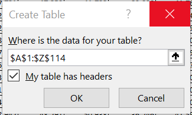 |
| 10 | Highlight the first two columns (Country and Type), and then within the Transform ribbon, select Unpivot Other Columns. | |
| 11 | Rename the third and fourth column to Period and Trade_Amt. | |
| 12 | To load the results back into Excel, within the Home (tab), select Close & Load. | |
| 13 | To only extract the country name in the first column, insert a column and then use the following formula: “=TRIM(LEFT([@Country],SEARCH(”(“,[@Country])-1))”. To keep these values, copy and paste back these same values only. | |
| 14 | Remove column A with the old values. Rename the header of the latest column A to Country. | 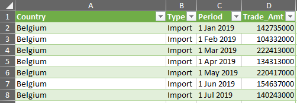 |
| 15 | Repeat steps 8 to 14 for sheet T2. | 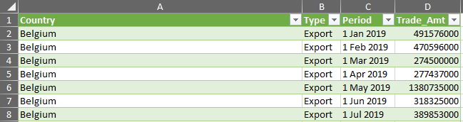 |
| 16 | To create a consolidated file, copy and combine the transformed tables in steps 14 and 15 into a single separate sheet. | 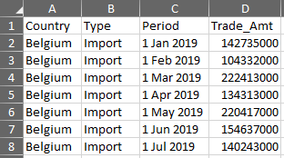 |
| 17 | Uncheck the six countries (Hong Kong, Mainland China, Japan, Malaysia, Taiwan and US) from the Country filter and delete the rows. Then remove filter to populate the table with only the six countries. | |
| 18 | Select the periods within 2021 from the Period filter and delete the rows. Save this file as “Consol”. This file will then be used for the visualisation on Tableau Desktop. |

|
6.2. Data Visualisation
Having prepared the data, we will now utilize Tableau Desktop for the eventual visualisation.
| No. | Steps | Screenshots |
|---|---|---|
| 1 | Open Tableau Desktop. Then connect to MS Excel and import the earlier Consol file. | |
| 2 | From the bottom bar, select Sheet 1. Then drag Country and Period to Columns, and Trade Amt to Rows. | 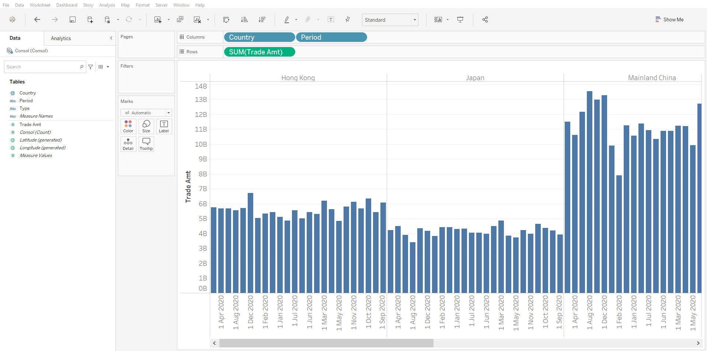 |
| 3 | On the left Data bar, select the dropdown menu for Period. Change Data Type to Date. | 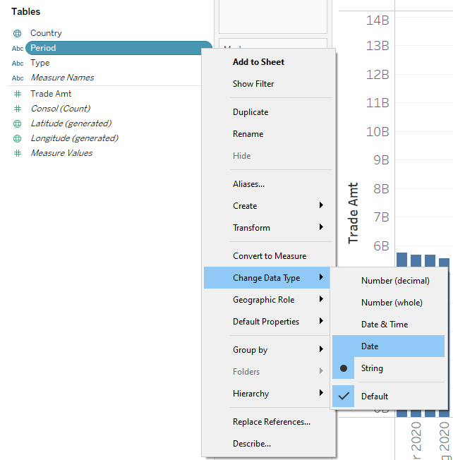 |
| 4 | From the Columns bar at the top of the screen, select the dropdown menu for Period. Select Month-Year. | 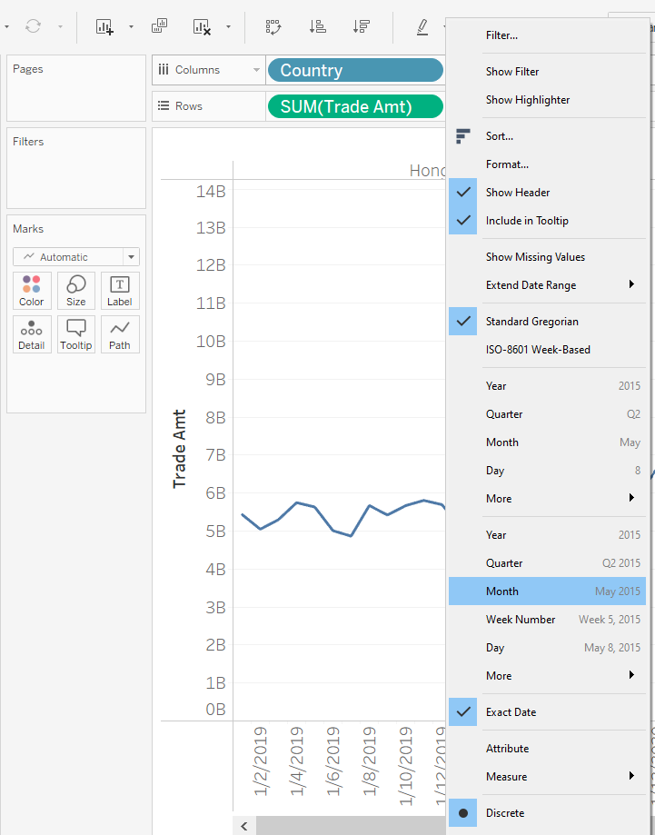 |
| 5 | Drag Type to Colour Marks | 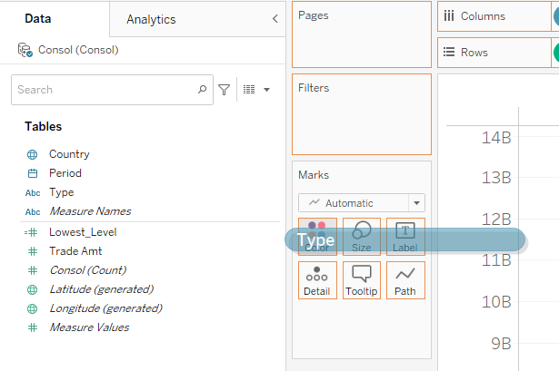 |
| 6 | Within the Marks dropdown menu, select Area. |

|
| 7 | Within the Colour Marks, select 100% Opacity. | |
| 8 | Since the Export and Import values should not be stacked on top of each other, we will separate them. Select Analysis from the toolbar, then select Stack Marks, then select Off | 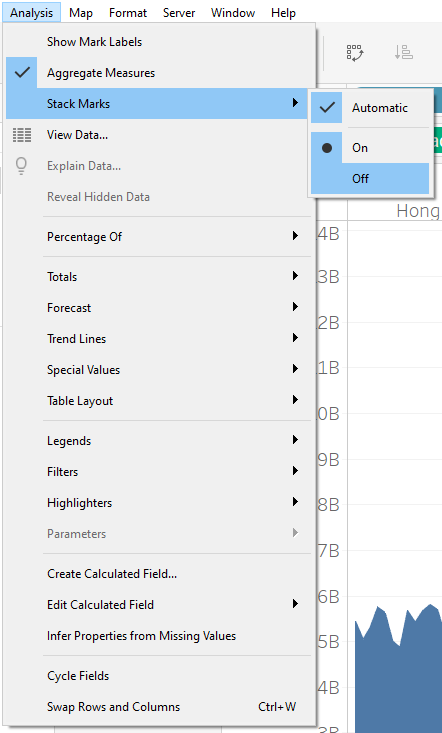 |
| 9 | To know the lowest level between Export and Import for each month, a calculated field will need to be created. Select Trade Amt from the left Data bar, and create a Calculated Field | 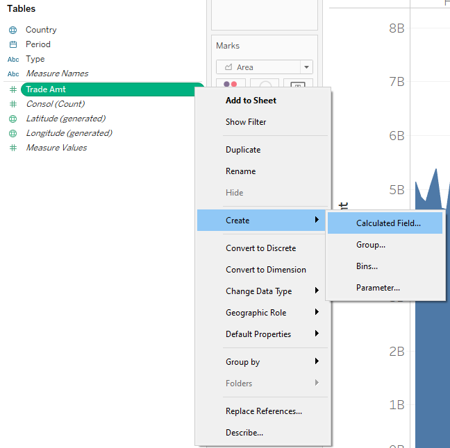 |
| 10 | Name this calculated field, Lowest_Level. Then use the following formula: {EXCLUDE [Type]:MIN([Trade Amt])} | |
| 11 | Drag the newly created Lowest_Level field to the vertical axis of Trade Amt. An icon with two verical bars should appear on the cursor. | 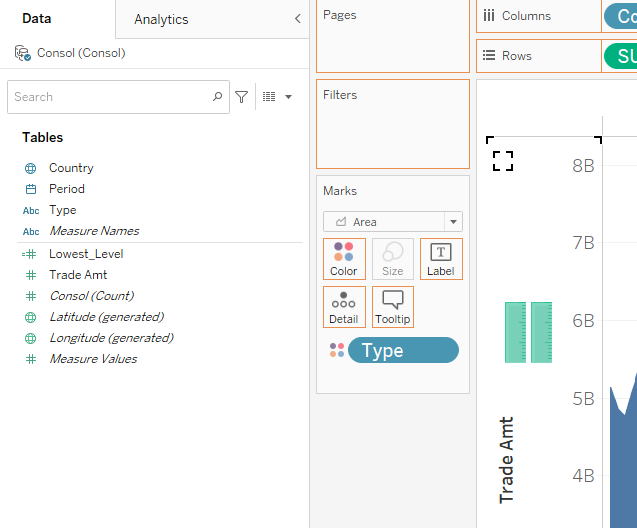 |
| 12 | Drag Measure Names from Rows at the top onto Detail Marks. | 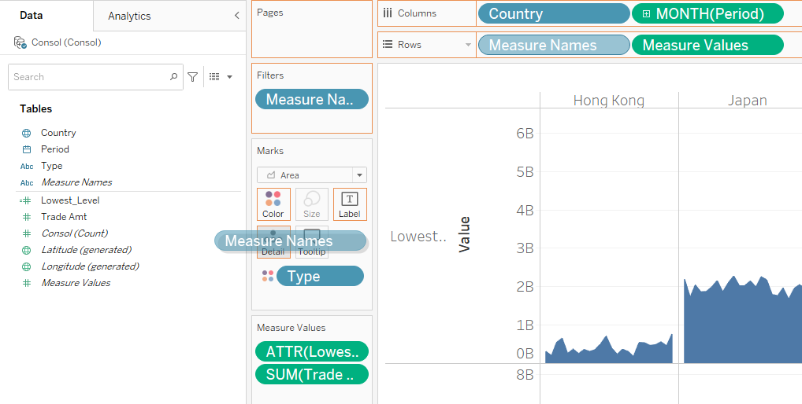 |
| 13 | Click on the Detail Marks icon beside Measure Names and select Colour | |
| 14 | Select Measure Names in the Marks column, then select Colour marks and Edit Colours. Select the colour White on both Lowest_Level fields | 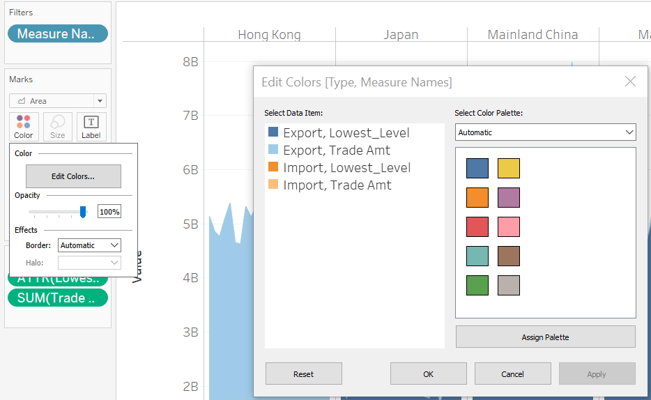 |
| 15 | Drag Trade Amt to Rows and change Sum Trade Amt to Line. | 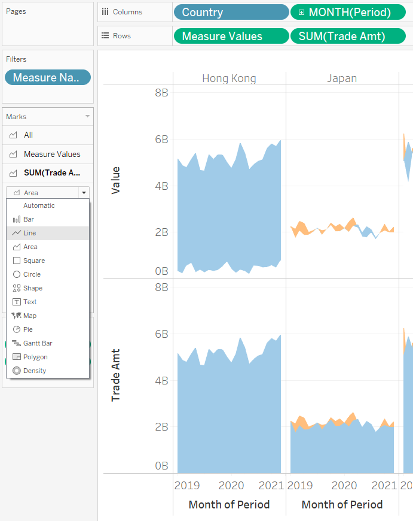 |
| 16 | Remove Measure Names from the Marks section, by dragging it out of the window. | |
| 17 | Right-click on Trade Amt and select Dual Axis. | 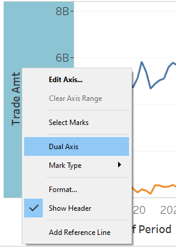 |
| 18 | Right-click on secondary axis, and select both Synchronize Axis and hide Show Header. | 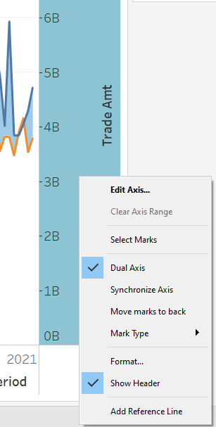 |
| 19 | Select Country at the top and Hide Fields Labels for Columns. | |
| 20 | Select Sheet 1 at the top and select Hide Title. | |
| 21 | To remove the horizontal grid lines, select Format and choose Lines. Then within the Format Lines window, select None for Grid Lines. | |
| 22 | Reorder the countries by dragging the country names into their respective positions as per the image. | 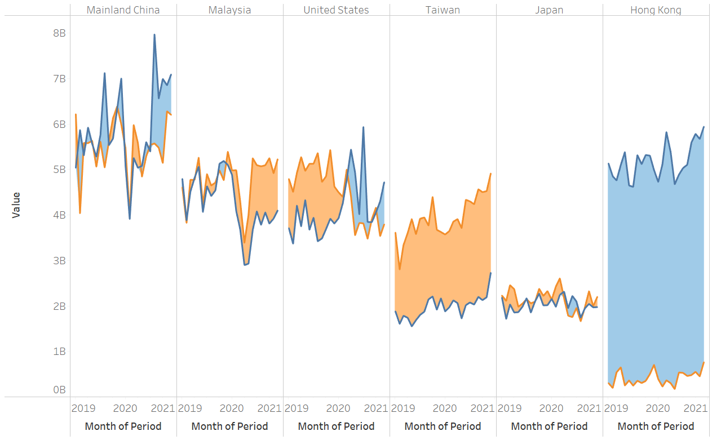 |
| 23 | Rename the Y-axis to Merchandise Trade Amt by right-clicking on the Y-axis and select Edit Axis. | 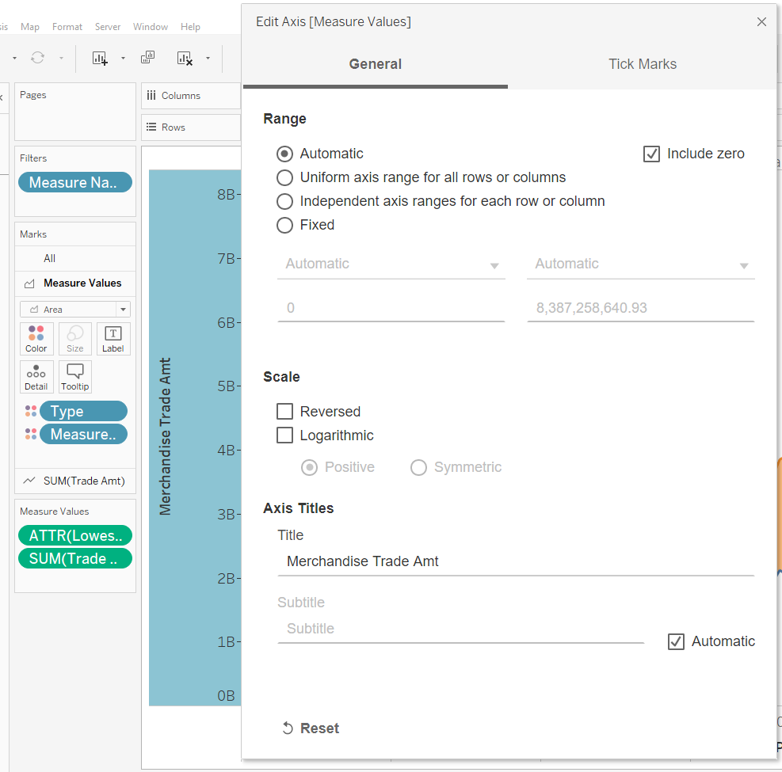 |
| 24 | Right-click on the horizontal time axis and select Edit Axis. Within the Tick Marks tab, select Fixed major tick marks, input 1/1/2019 as the tick origin and set the Interval at 2. |

|
| 25 | Then within the General tab, remove Month of Period from the Axis Title. Click OK. | |
| 26 | To remove the vertical lines that separate the countries, right click on the visualisation, and select Format. At the top, choose the fourth icon called Borders. Under Column Divider, select Pane and then choose None. | |
| 27 | To change the area under the lowest level lines to a grey tinge, select Measure Values within the Marks window and edit colors. For each of the Lowest Level data items, choose Val 245 or HTML color of #f5f5f5. | |
| 28 | To change the area above the graphs to the same grey tinge, right-click on the horizontal time axis and select Add Reference Line. Then choose the Band icon, and select Entire Table as the Scope. Within the Band From, input 1/1/2019 and Constant within the value and choose None for the label. Within the Band To, input 1/12/2020 and Constant within the value and choose None for the label. Lastly within Fill, choose More Colors and select Val 245 or HTML color of #f5f5f5. | |
| 29 | To change the fonts of the Country Headers, right-click on the countries and select Format. Choose Tableau Semibold for its font, size 18 and choose Bold. Then rename Sheet 1 to Viz and save your work. |
6.3. Creating the Static Dashboard
Having visualised the data, we will now put the final touches on a dashboard.
| No. | Steps | Screenshots |
|---|---|---|
| 1 | Create a new Dashboard. On the top left, select Default Dashboard, and then select Automatic as its size | |
| 2 | Let’s create a header. Within Objects, click on Floating. Drag Text to the main window. Type ‘Singapore’s Top Six Trading Countries Greatly Differ in Both Export And Import’. Choose Tableau Semibold font, size 18 and black colour. | |
| 3 | To replace the legend, we will colour code the words Export and Import. Highlight the Export word, and choose HTML color #4e79a7. Do the same for the Import word, but this time, choose HTML color #f28e2b |

|
| 4 | To perfectly align the header, select the text and then the layout column. Follow the position and size dimensions as shown in the picture. Do note that your width might differ from the picture, given your differing screen resolution. | |
| 5 | Let’s now create a sub-header in similar fashion. Within Objects, click on Floating. Drag Text to the main window. Type ‘The import and export fluctuations within each of its top six trading countries differ greatly between 2018 to 2020, as well as against other top trading countries.’. Choose Tableau Book font, size 12 and black colour. | |
| 6 | As per before, to perfectly align the sub-header, select the text and then the layout column. Follow the position and size dimensions as shown in the picture. | 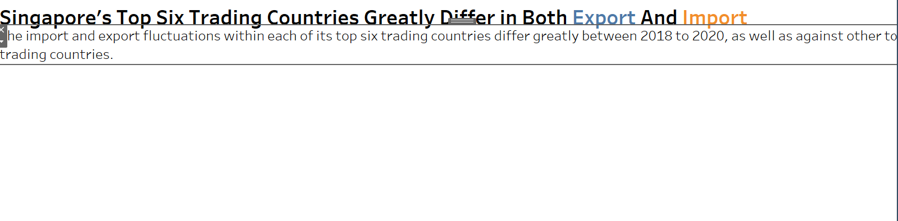 |
| 7 | Next drag the newly created Viz sheet into the dashboard and remove its legend. | 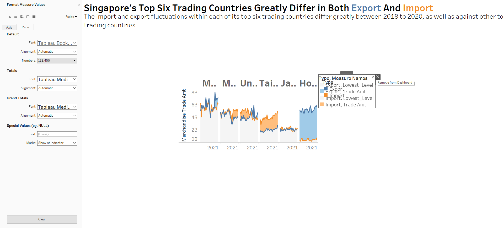 |
| 8 | To nicely align the Viz sheet, follow the position and size dimensions as shown in the picture. | 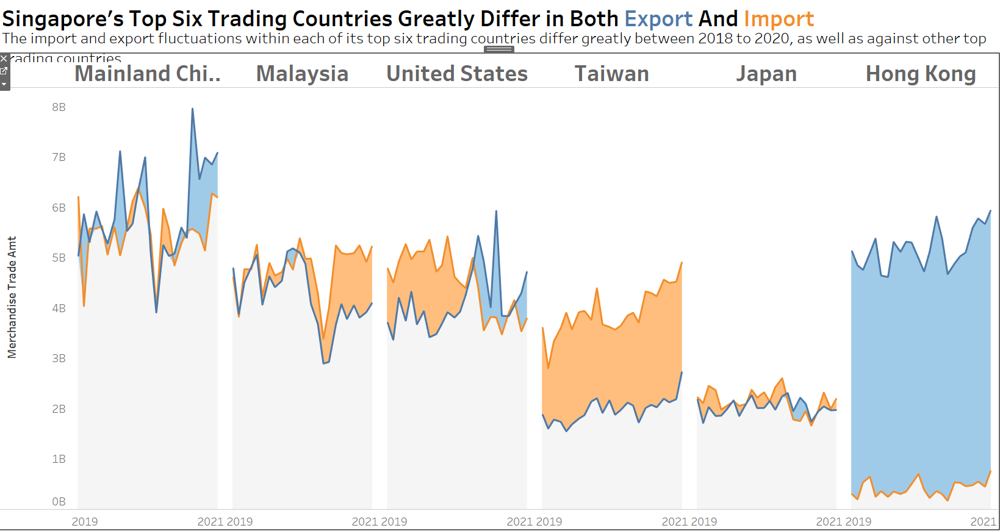 |
| 9 | Reorder the Item Hierarchy such that Viz is on the lowest level. | |
| 10 | To annotate our comments, go back to the Viz worksheet, right-click a point on the graph and select Annotate, Point. Then enter the necessary comments and choose size 8 font, and click OK. To remove the background box shading, select None for shading within the Format Annotation window. | |
| 11 | Rename your dashbaord as Viz1 and then save this dashboard to Tableau Public. |
7. Final Visualisation
7.1. Visualisation Snapshot
To gain access to this dashboard on Tableau Public, click on this link. This dashboard is best viewed on a secondary monitor.

7.2. Derived Insights
- Amongst the six countries, Hong Kong had the biggest gap in merchandise trade amount between export and import. Singapore’s exports to HK far outstrip HK’s imports into Singapore, with Mar-2020 recording the widest 2 year gap.
- The converse is true for Taiwan. Taiwan’s imports to Singapore consistently outstrip Singapore’s exports to Taiwan, with Oct-2020 recording the widest 2 year gap.
- For the United States, import levels were consistently higher prior to Apr-2020. From this point onwards, export to the United States became consistently higher.
- Similarly for Malaysia, from Dec-2021 onwards, import consistently outgrew export. Prior to this, export and import levels greatly overlapped each other.
- Though at different levels, both the export and import levels within Mainland China and Japan fluctuate consistently.